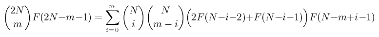

If you start with a quadratic function f and with to find a root, start with any point x(0). Then recursivly define:
#begin Maple Code
interface(prettyprint=false):
f := (x) -> a*x^2 + b*x + c:
df := D(f):
x := proc(n)
if n=0 then x0
else simplify( x(n-1) - f(x(n-1)) / df(x(n-1)) )
fi
end:
for n from 0 to 4 do printf("x(%a) = %q\n\n",n,x(n)) end do:
#end Maple Code
If x0 is chosen well, then x(n) will converge to a zero of f.
I let x(0) be the formal variable x0 and never plug in a value for it. x(n) is in the form of P(n,x0) / Q(n,x0). P and Q are interesting polynomials!
#begin Maple Code
# stolen from Jim Propp, via email.
P := proc(n) option remember;
if n=0 then x0
else simplify( a * P(n-1) * P(n-1) - c * Q(n-1) * Q(n-1) );
fi;
end:
Q := proc(n) option remember;
if n=0 then 1
else simplify( 2 * a * P(n-1) * Q(n-1) + b * Q(n-1) * Q(n-1) );
fi;
end:
for n from 0 to 4 do
printf("P(%a) = %q\n\n",n,P(n)):
printf("Q(%a) = %q\n\n",n,Q(n)):
end do:
#end Maple Code
These are polynomials in a,b,c and x0. Let's simplify by letting a=b=(-c)=1. Things are a bit more intersting now.
P(4) = 610 + 6032*x0 + 27960*x0^2 + 161980*x0^4 + 80640*x0^3 + 167310*x0^8 + 272272*x0^6 + 240240*x0^5 + 240240*x0^7 + x0^16 + 120*x0^14 + 3640*x0^12 + 560*x0^13 + 40040*x0^10 + 13104*x0^11 + 91520*x0^9 Q(4) = 987 + 9760*x0 + 45240*x0^2 + 262080*x0^4 + 130480*x0^3 + 270270*x0^8 + 440440*x0^6 + 388752*x0^5 + 388960*x0^7 + 120*x0^14 + 5460*x0^12 + 1120*x0^13 + 64064*x0^10 + 21840*x0^11 + 148720*x0^9 + 16*x0^15
Paul, Sam, and Carl found a nice closed form expression for P and Q.
with(combinat, fibonacci):
Fib := (n) -> fibonacci(n+1):
P1 := (n,x) -> add( binomial(2^n,k) * (Fib(2^n-k-2)) * x^k,k=0..2^n):
Q1 := (n,x) -> add( binomial(2^n,k) * (Fib(2^n-k-1)) * x^k,k=0..2^n):
for n from 0 to 4 do
printf("P(%a) - P1(%a) = %q\n",n,n,P(n)-P1(n,x0)):
printf("Q(%a) - Q1(%a) = %q\n",n,n,Q(n)-Q1(n,x0)):
end do:
It can be shown that those expressions satisfy the recurrance for all n iff this nice little identity holds:

C(2·N,m)·F(2·N-m-1) = ∑(i=0, m, C(N,i)·C(N,m-i)·(2·F·(N-i-2)+F(N-i-1))·F(N-m+i-1))
{2N \choose m } F(2N-m-1) = \sum_{i=0}^m {N \choose i} {N \choose m-i} \Big( 2 F(N-i-2) + F(N-i-1) \Big) F(N-m+i-1)
I really ought to prove this. It seems to hold for all n < 300.
#begin Maple Code with(combinat, fibonacci): Fib := (n) -> fibonacci(n+1): LHS := (N,m) -> binomial(2*N,m)*Fib(2*N-m-1): RHS := (N,m) -> add(binomial(N,i)*binomial(N,(m-i))* (2*Fib(N-i-2)+Fib(N-i-1))*Fib(N-(m-i)-1),i=0..m): LHS(17,7) - RHS(17,7); #end Maple Code